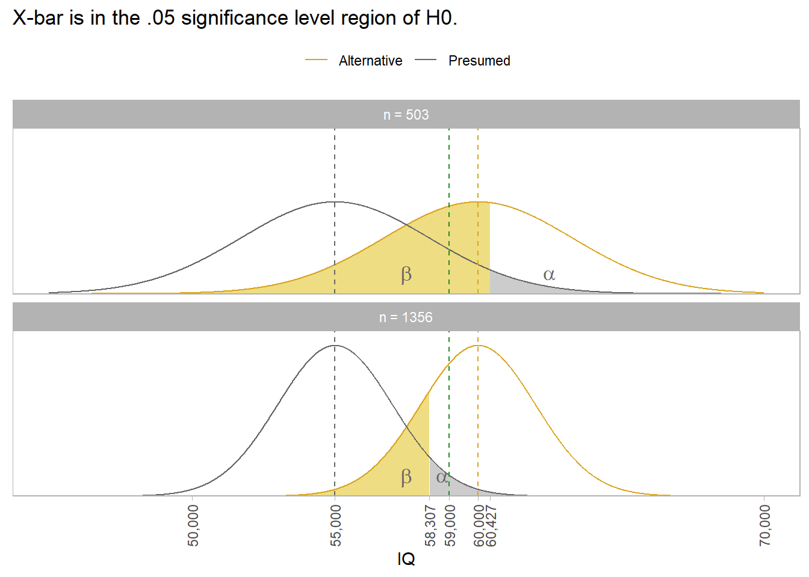

The survey design (aka, sampling strategy) depends on how study objectives are translated into survey questions, the units of analysis from the target population, the variables and covariates, and the available sampling frames for data collection (Valliant 2013). Exploratory surveys often sample individuals with qualifying characteristics by convenience, snowball (referrals), quota, or purposeful sampling (Lau 2017). In contrast to these non-probability sampling strategies, descriptive and explanatory surveys use probability sampling, including simple random sampling (SRS) and stratified sampling.1 Regardless of the survey design, sample size is set using one of two target values: i) coefficient of variation, \(CV_0(\theta) = SE / \theta\), and ii) margin of error (aka, tolerance), \(MOE = \pm z_{1-\alpha} \cdot SE\).
2.1 Simple Random Sampling
2.1.1 Continuous Values
Suppose you estimate a population (univeral) mean, \(\bar{y}_U\), from the mean of a simple random sample, \(\bar{y}_s\). Under repeated sampling, the sample means would have variance related to the population variance, \(S^2\).
Equation 2.1 is the square of the standard error with a finite population correction factor (FPC), \(1 - n / N\). The FPC reduces the expected variance for small populations. In practice, the FPC is only important for sample size calculations when \(n/N < .05\) - frequently the case in internal company surveys. \(S\) is an unknown population parameter estimated from the sample, \(s\), or by a rule of thumb.
The ratio \(V(\bar{y}_s) / \bar{y}_U^2\) is the square of the targeted coefficient of variation, \(CV_0\).
The numerator in Equation 2.3 is the population CV (a.k.a., unit CV).
Use PracTools::nCont() to calculate \(n\). Setting the unit CV is somewhat of a chicken-and-egg problem since \(S^2\) and \(\bar{y}_U^2\) are the population parameters you are estimating. Either rely on prior research or a best guess. The range rule of thumb is \(S = \mathrm{range} / 4\). The targeted CV is usually set to 5% or 10%, or something better than prior research.
Example. Prior experience suggests the unit CV is approximately \(2\). Your survey targets \(CV_0(\bar{y}_s) = 0.05\).
Show the code
# N defaults to Inf. Use this for "large" populations.PracTools::nCont(CV0 = .05, CVpop =2)## [1] 1600# For a company survey, include N. for 10,000 employees you can survey a few less.PracTools::nCont(CV0 = .05, CVpop =2, N =10000)## [1] 1379.31# Even for a small population, you can still survey about half.PracTools::nCont(CV0 = .05, CVpop =2, N =1000)## [1] 615.3846# If you don't know CVpop or ybarU and S2, but have an expectation about ybarU # and the range, use the range rule of thumb.PracTools::nCont(CV0 = .10, S2 = (abs(0-800) /4)^2, ybarU =100) |>ceiling()## [1] 400
When does N become important? It depends on CV0, but N=20,000 seems to be upper limit.
where \(\frac{N}{N-1} \cdot \frac{1 - p_U}{p_U}\) is the square of the unit CV. When \(N\) is large, Equation 2.5 reduces to \(CV^2(p_s) \approx \frac{1}{n} \cdot \frac{1 - p_U}{P_U}\). From here you can see that \(n\) varies inversely with \(p_U\). PracTools::nProp() calculates \(n\) for proportions.
Example. From prior experience you think \(p_U = .01\) and \(N\) is large. You set a targeted CV of \(CV_0^2(p_s) = 0.05\).
Show the code
PracTools::nProp(CV0 = .05, pU = .01)## [1] 39600
Whoa, \(n\) is huge!
You might choose to target a margin of error instead, \(MOE = \pm z_{1-\alpha} \cdot SE\). Recall that \(P(|p_s - p_U| < MOE) = 1 - \alpha\). PracTools::nPropMoe() and PracTools::nContMoe() calculate \(n\) for MOEs.
Example. Continuing from above, suppose you set a tolerance of a half percentage point, \(MOE \pm 0.5\%\).
Show the code
MOE <- .005# moe.sw = 1 sets MOE based on SE; moe.sw = 2 sets MOE based on CV.PracTools::nPropMoe(moe.sw =1, e = MOE, alpha = .05, pU = .01)## [1] 1521.218# The long way using nProp: (z_025 <-qnorm(p = .05/2, lower.tail =FALSE))## [1] 1.959964(SE <- MOE / z_025)## [1] 0.002551067PracTools::nProp(V0 = SE^2, pU = .01)## [1] 1521.218# When pU is extreme (~0 or ~1), the 95% CI can pass the [0,1] limits. The # Wilson method accounts for that (not discussed here). Notice the 95% CI is# not symmetric about pU. The 95% CI calculation is one of the reasons it is# used.PracTools::nWilson(moe.sw =1, e = MOE, alpha = .05, pU = .01)## $n.sam## [1] 1605.443## ## $`CI lower limit`## [1] 0.00616966## ## $`CI upper limit`## [1] 0.01616966## ## $`length of CI`## [1] 0.01# The log odds is another approach that does about the same thing.PracTools::nLogOdds(moe.sw =1, e = MOE, alpha = .05, pU = .01)## [1] 1637.399
2.2 Stratified SRS
Stratified samples partition the population by dimensions of interest before sampling. This way, important domains are assured of adequate representation. Stratifying often reduce variances. Choose stratification if i) an SRS risks poor distribution across the population, ii) you have domains you will study separately, or iii) there are units with similar mean and variances that can be grouped to increase efficiency.
In a stratified design, the measured mean or proportion of the population is the simple weighted sum of the \(h\) strata, \(\bar{y}_{st} = \sum{W_h}\bar{y}_{sh}\) and \(p_{st} = \sum{W_h}p_{sh}\). The population sampling variance is analogous,
Example. Suppose you are measuring expenditure within a company of \(N = 875\) employees and want to stratify by the \(h = 6\) departments. You target a \(CV_0(\bar{y_s}) = .10.\)
Show the code
data(smho98, package ="PracTools")# You'll survey 560 people across the 16 strata.smho98 %>%group_by(STRATUM) %>%summarize(Nh =n(), Mh =mean(EXPTOTAL), Sh =sd(EXPTOTAL)) %>%mutate(CVpop = Sh / Mh,nh =map2_dbl(CVpop, Nh, ~PracTools::nCont(CV0 = .10, CVpop = .x, N = .y) %>%ceiling()) ) %>% janitor::adorn_totals("row", fill =NULL, na.rm =FALSE, name ="Total", Nh, nh)## STRATUM Nh Mh Sh CVpop nh## 1 151 13066021.0 14792181.7 1.1321107 70## 2 64 40526852.3 37126887.6 0.9161059 37## 3 43 11206761.2 11531709.1 1.0289957 31## 4 22 7714828.7 8422580.5 1.0917391 19## 5 150 4504517.9 6228212.0 1.3826589 85## 6 23 2938983.2 3530750.8 1.2013511 20## 7 65 7207527.1 9097011.5 1.2621543 47## 8 14 1879611.1 1912347.8 1.0174168 13## 9 38 13841123.7 11609453.3 0.8387652 25## 10 12 5867993.8 6427340.3 1.0953216 11## 11 13 925512.8 659352.8 0.7124189 11## 12 77 4740554.8 6905571.9 1.4567012 57## 13 59 9060838.1 12884439.0 1.4219920 46## 14 86 9511349.0 6741831.0 0.7088196 32## 15 39 34251923.7 82591916.4 2.4113074 37## 16 19 4629061.5 9817393.7 2.1208173 19## Total 875 NA NA NA 560# What if we don't stratify? Only 290!smho98 %>%summarize(Nh =n(), Mh =mean(EXPTOTAL), Sh =sd(EXPTOTAL)) %>%mutate(CVpop = Sh / Mh,nh =map2_dbl(CVpop, Nh, ~PracTools::nCont(CV0 = .10, CVpop = .x, N = .y) %>%ceiling()) ) %>% janitor::as_tabyl()## Nh Mh Sh CVpop nh## 875 11664181 24276522 2.081288 290
If a fixed budget constrains you to \(n\) participants you have five options: i) if \(S_h\) are approximately equal and you are okay with small stratum getting very few units, allocate \(n\) by proportion, \(n_h = nW_h\); ii) if your strata are study domains, allocate \(n\) equally, \(n_h = n / H\); iii) use Neyman allocation to minimize the population sampling variance; iv) use cost-constrained allocation to minimize cost, or v) use precision-constrained allocation to minimize population sampling variance. Options iv and v take into account variable costs. Use function PracTools::strAlloc().
The Neyman allocation allocates by stratum weight,
Suppose your costs vary by stratum, \(c_h\). The cost-constrained allocation starts with \(C = c_0 + \sum n_h c_h.\) Minimizing the population sampling variance,
Example. Suppose you have a fixed budget of $100,000. If sampling costs are $1,000 person, survey \(n = 100\) people and allocate \(n\) to \(n_h\) with options i-iii). If sampling costs vary by stratum, use options iv-v).
Sections @ref(srs) and @ref(stratified-srs) calculated sample sizes based on the desired precision of the population parameter using CV, MOE, and cost constraints. Another approach is to calculate the sample size required to detect the alternative value in a hypothesis test. Power is a measure of the likelihood of detecting some magnitude difference \(\delta\) between \(H_0\) and \(H_a\).2 Power calculations are best suited for studies that estimate theoretical population values, not for studies that estimate group differences in a finite population (Valliant 2013).
A measured \(t = \frac{\hat{\bar{y}} - \mu_0}{\sqrt{v(\hat{\bar{y}})}}\) test statistic would vary with repeated measurements and have a \(t\) distribution. A complication about the degrees of freedom arises in survey analysis. It is usually defined using a rule of thumb: \(df = n_{psu} - n_{strata}\). So if you have 10 strata and 100 PSUs per stratum, \(df\) would equal 1,000 - 100 = 900.
Example. Suppose you want to measure mean household income for married couples. From prior research, you expect the mean is $55,000 with 6% CV. You hypothesize \(\mu\) is greater than $55,000, but only care if the difference is at least $5,000.
The 6% CV implies SE = 6% * $55,000 = $3,300. Supposing \(\sigma\) = $74,000, the original research would have use a sample of size n = \((\$74,000 / \$3,300)^2\) = 503.
Don’t use n = 503 for your sample though. The probability of measuring a sample mean >= $60,000 with an acceptable p-value is the power of the study. For n = 503 the power is only 0.448. The area of 1 - \(\beta\) in the top panel below is only pnorm(qnorm(.95, 50000, 3300), 55000, 3300, lower.tail = FALSE) = 0.448. To achieve a 1-\(\beta\) = .80 power, you need n = 1,356. That’s what the bottom panel shows. Notice that a sample mean of $59,000 still rejects H0: \(\mu\) = $55,000. The power of the test tells you the sample size you need to draw a sample mean large enough to reject H0 1-\(\beta\) percent of the time.

The power of the test from the original study was only 0.448.
One-sample t test power calculation
n = 503
delta = 5000
sd = 74000
sig.level = 0.05
power = 0.4476846
alternative = one.sided
With such a low power of the study, a sample mean of $59,000 isn’t large enough to reject H0. Its p-value would be pt(q = (59000-55000)/(74000/sqrt(503)), df = 503 - 1, lower.tail = FALSE) = 0.113. To find the right sample size, use the power calculation with 1 - \(\beta\) and n unspecified.
One-sample t test power calculation
n = 1355.581
delta = 5000
sd = 74000
sig.level = 0.05
power = 0.8
alternative = one.sided
2.4 Appendix: Bias
A consideration not explored here, but which should be on your mind is the risk of bias. Here are a few types of bias to beware of (Lau 2017).
Coverage bias. The sampling frame is not representative of the population. E.g., school club members is a poor sampling frame if target population is high school students.
Sampling bias. The sample itself is not representative of the population. This occurs when response rates differ, or sub-population sizes differ. Explicitly define the target population and sampling frame, and use systematic sampling methods such as stratified sampling. Adjust analysis and interpretation for response rate differences.
Non-response bias. Responded have different attributes than non-respondents. You can offer incentives to increase response rate, follow up with non-respondents to find out the reasons for their lack of response, or compare the characteristics of non-respondents with respondents or known external benchmarks for differences.
Measurement bias. Survey results differ from the population values. The major cause is deficient instrument design due to ambiguous items, unclear instructions, or poor usability. Reduce measurement bias with pretesting or pilot testing of the instrument, and formal tests for validity and reliability.
Cluster sampling, systematic sampling and Poisson sampling are other sampling methods to at least be aware of. I’m not ready to deal with these yet.↩︎
See statistics handbook section on frequentist statistics for discussion of Type I and II errors.↩︎
Source Code
# Sample Size```{r include=FALSE}library(tidyverse)library(scales)theme_set( theme_light())```The survey design (aka, sampling strategy) depends on how study objectives are translated into survey questions, the units of analysis from the target population, the variables and covariates, and the available sampling frames for data collection [@valliant2013]. Exploratory surveys often sample individuals with qualifying characteristics by convenience, snowball (referrals), quota, or purposeful sampling [@lau2017]. In contrast to these *non-probability sampling* strategies, descriptive and explanatory surveys use *probability sampling*, including simple random sampling (SRS) and stratified sampling.[^02-survey_design-1] Regardless of the survey design, sample size is set using one of two target values: i) coefficient of variation, $CV_0(\theta) = SE / \theta$, and ii) margin of error (aka, *tolerance*), $MOE = \pm z_{1-\alpha} \cdot SE$.[^02-survey_design-1]: Cluster sampling, systematic sampling and Poisson sampling are other sampling methods to at least be aware of. I'm not ready to deal with these yet.## Simple Random Sampling {#srs}### Continuous ValuesSuppose you estimate a population (univeral) mean, $\bar{y}_U$, from the mean of a simple random sample, $\bar{y}_s$. Under repeated sampling, the sample means would have variance related to the population variance, $S^2$.$$V(\bar{y}_s) = \left(1 - \frac{n}{N} \right) \frac{S^2}{n}$$ {#eq-ybar-var}@eq-ybar-var is the square of the standard error with a *finite population correction* factor (FPC), $1 - n / N$. The FPC reduces the expected variance for small populations. In practice, the FPC is only important for sample size calculations when $n/N < .05$ - frequently the case in internal company surveys. $S$ is an unknown population parameter estimated from the sample, $s$, or by a rule of thumb.The ratio $V(\bar{y}_s) / \bar{y}_U^2$ is the square of the targeted *coefficient of variation*, $CV_0$.$$CV_0^2(\bar{y}) = \left(1 - \frac{n}{N} \right) \cdot \frac{1}{n} \cdot \frac{S^2}{\bar{y}_U^2}$$ {#eq-cv2}Solve @eq-cv2 for the required sample size to achieve $CV_0(\bar{y}_s)$.$$n = \frac{S^2 / \bar{y}_U^2}{CV_0^2 + S^2 / (N \cdot \bar{y}_U^2)}$$ {#eq-cv-n}The numerator in @eq-cv-n is the population CV (a.k.a., unit CV).Use `PracTools::nCont()` to calculate $n$. Setting the unit CV is somewhat of a chicken-and-egg problem since $S^2$ and $\bar{y}_U^2$ are the population parameters you are estimating. Either rely on prior research or a best guess. The [range rule of thumb](https://www.statology.org/range-rule-of-thumb/) is $S = \mathrm{range} / 4$. The targeted CV is usually set to 5% or 10%, or something better than prior research.**Example**. Prior experience suggests the unit CV is approximately $2$. Your survey targets $CV_0(\bar{y}_s) = 0.05$.```{r collapse=TRUE}# N defaults to Inf. Use this for "large" populations.PracTools::nCont(CV0 = .05, CVpop = 2)# For a company survey, include N. for 10,000 employees you can survey a few less.PracTools::nCont(CV0 = .05, CVpop = 2, N = 10000)# Even for a small population, you can still survey about half.PracTools::nCont(CV0 = .05, CVpop = 2, N = 1000)# If you don't know CVpop or ybarU and S2, but have an expectation about ybarU # and the range, use the range rule of thumb.PracTools::nCont(CV0 = .10, S2 = (abs(0 - 800) / 4)^2, ybarU = 100) |> ceiling()```When does N become important? It depends on CV0, but N=20,000 seems to be upper limit.```{r echo=FALSE, fig.height=3.5}expand.grid( CV0 = c(.05, .10), N = c(5E4, 4E4, 3E4, 2E4, 1E4, 5E3, 4E3, 3E3, 2E3, 1E3, 500, 400, 300, 200, 100)) |> mutate(n = map2_dbl(CV0, N, ~PracTools::nCont(CV0 = .x, CVpop = 2, N = .y))) |> ggplot(aes(x = N, y = n, color = as.factor(CV0))) + geom_line() + annotate("segment", x = 5000, xend = 5000, y = 0, yend = 400, linetype = 3, color = "#00BFC4", linewidth = 1) + annotate("segment", x = 0, xend = 5000, y = 400, yend = 400, linetype = 3, color = "#00BFC4", linewidth = 1) + annotate("segment", x = 0, xend = 20000, y = 1500, yend = 1500, linetype = 3, color = "#F8766D", linewidth = 1) + annotate("segment", x = 20000, xend = 20000, y = 0, yend = 1500, linetype = 3, color = "#F8766D", linewidth = 1) + labs(color = "CV0")```Alternatively, you can target a margin of error.$$MOE = t_{(1-\alpha), (n-1)} SE(\bar{y}) $$ {#eq-moe}**Example**. You want a margin of error of 20. You estimate an overall range of 800.```{r}PracTools::nContMoe(moe.sw =1, e =20, S2 = (abs(0-800) /4)^2) |>ceiling()```### ProportionsIf the population parameter is a proportion, $p$, the CV is$$CV^2(p_s) = \left(1 - \frac{n}{N} \right) \cdot \frac{1}{n} \cdot \frac{N}{N-1} \cdot \frac{1 - p_U}{p_U}$$ {#eq-unit-cv-pop}where $\frac{N}{N-1} \cdot \frac{1 - p_U}{p_U}$ is the square of the unit CV. When $N$ is large, @eq-unit-cv-pop reduces to $CV^2(p_s) \approx \frac{1}{n} \cdot \frac{1 - p_U}{P_U}$. From here you can see that $n$ varies inversely with $p_U$. `PracTools::nProp()` calculates $n$ for proportions.**Example**. From prior experience you think $p_U = .01$ and $N$ is large. You set a targeted CV of $CV_0^2(p_s) = 0.05$.```{r collapse=TRUE}PracTools::nProp(CV0 = .05, pU = .01)```Whoa, $n$ is huge! You might choose to target a margin of error instead, $MOE = \pm z_{1-\alpha} \cdot SE$. Recall that $P(|p_s - p_U| < MOE) = 1 - \alpha$. `PracTools::nPropMoe()` and `PracTools::nContMoe()` calculate $n$ for MOEs.**Example**. Continuing from above, suppose you set a tolerance of a half percentage point, $MOE \pm 0.5\%$.```{r collapse=TRUE}MOE <- .005# moe.sw = 1 sets MOE based on SE; moe.sw = 2 sets MOE based on CV.PracTools::nPropMoe(moe.sw = 1, e = MOE, alpha = .05, pU = .01)# The long way using nProp: (z_025 <- qnorm(p = .05/2, lower.tail = FALSE))(SE <- MOE / z_025)PracTools::nProp(V0 = SE^2, pU = .01)# When pU is extreme (~0 or ~1), the 95% CI can pass the [0,1] limits. The # Wilson method accounts for that (not discussed here). Notice the 95% CI is# not symmetric about pU. The 95% CI calculation is one of the reasons it is# used.PracTools::nWilson(moe.sw = 1, e = MOE, alpha = .05, pU = .01)# The log odds is another approach that does about the same thing.PracTools::nLogOdds(moe.sw = 1, e = MOE, alpha = .05, pU = .01)```## Stratified SRS {#stratified-srs}Stratified samples partition the population by dimensions of interest before sampling. This way, important domains are assured of adequate representation. Stratifying often reduce variances. Choose stratification if i) an SRS risks poor distribution across the population, ii) you have domains you will study separately, or iii) there are units with similar mean and variances that can be grouped to increase efficiency.In a stratified design, the measured mean or proportion of the population is the simple weighted sum of the $h$ strata, $\bar{y}_{st} = \sum{W_h}\bar{y}_{sh}$ and $p_{st} = \sum{W_h}p_{sh}$. The population sampling variance is analogous,$$\begin{equation}var(\bar{y}_{st}) = \sum W_h^2 \cdot \left(1 - \frac{n_h}{N} \right) \cdot \frac{1}{n_h} \cdot S_h^2.(\#eq:var-stratified)\end{equation}$$Use the SRS sampling methods described in Section \@ref(srs) to estimate each stratum.The effect of stratification relative to SRS is captured in the *design effect* ratio,$$D^2(\hat{\theta}) = \frac{var(\hat{\theta})_\mathrm{complex}}{var(\hat{\theta})_\mathrm{SRS}}$$**Example**. Suppose you are measuring expenditure within a company of $N = 875$ employees and want to stratify by the $h = 6$ departments. You target a $CV_0(\bar{y_s}) = .10.$```{r collapse=TRUE}data(smho98, package = "PracTools")# You'll survey 560 people across the 16 strata.smho98 %>% group_by(STRATUM) %>% summarize(Nh = n(), Mh = mean(EXPTOTAL), Sh = sd(EXPTOTAL)) %>% mutate( CVpop = Sh / Mh, nh = map2_dbl(CVpop, Nh, ~PracTools::nCont(CV0 = .10, CVpop = .x, N = .y) %>% ceiling()) ) %>% janitor::adorn_totals("row", fill = NULL, na.rm = FALSE, name = "Total", Nh, nh)# What if we don't stratify? Only 290!smho98 %>% summarize(Nh = n(), Mh = mean(EXPTOTAL), Sh = sd(EXPTOTAL)) %>% mutate( CVpop = Sh / Mh, nh = map2_dbl(CVpop, Nh, ~PracTools::nCont(CV0 = .10, CVpop = .x, N = .y) %>% ceiling()) ) %>% janitor::as_tabyl()```If a fixed budget constrains you to $n$ participants you have five options: i) if $S_h$ are approximately equal and you are okay with small stratum getting very few units, allocate $n$ by proportion, $n_h = nW_h$; ii) if your strata are study domains, allocate $n$ equally, $n_h = n / H$; iii) use Neyman allocation to minimize the population sampling variance; iv) use cost-constrained allocation to minimize cost, or v) use precision-constrained allocation to minimize population sampling variance. Options iv and v take into account variable costs. Use function `PracTools::strAlloc()`.The *Neyman* allocation allocates by stratum weight,$$\begin{equation}n_h = n \cdot \frac{W_h S_h}{\sum W_h S_h}.(\#eq:neyman-allocation)\end{equation}$$Suppose your costs vary by stratum, $c_h$. The *cost-constrained allocation* starts with $C = c_0 + \sum n_h c_h.$ Minimizing the population sampling variance,$$\begin{equation}n_h = (C - c_0) \frac{W_hS_h / \sqrt{c_h}}{\sum W_h S_h \sqrt{c_h}}.(\#eq:cost-allocation)\end{equation}$$This method allocates more population to larger strata and strata with larger variances. The *precision-constrained allocation* is$$\begin{equation}n_h = (W_h S_h / \sqrt{c_h}) \frac{\sum W_h S_h \sqrt{c_h}}{V_0 + N^{-1} \sum W_h S_h^2}.(\#eq:precision-allocation)\end{equation}$$**Example**. Suppose you have a fixed budget of \$100,000. If sampling costs are \$1,000 person, survey $n = 100$ people and allocate $n$ to $n_h$ with options i-iii). If sampling costs vary by stratum, use options iv-v).```{r collapse=TRUE}# Stratum per capita survey costsch <- c(1400, 400, 300, 600, 450, 1000, 950, 250, 350, 650, 450, 950, 80, 70, 900, 80)smho98 %>% group_by(STRATUM) %>% summarize(Nh = n(), Mh = mean(EXPTOTAL), Sh = sd(EXPTOTAL)) %>% bind_cols( `i) prop` = ceiling(.$Nh / sum(.$Nh) * 100), `ii) equal` = ceiling(1 / nrow(.) * 100), `iii) neyman` = PracTools::strAlloc(n.tot = 100, Nh = .$Nh, Sh = .$Sh, alloc = "neyman") %>% pluck("nh") %>% ceiling(), ch = ch, `iv) cost` = PracTools::strAlloc(Nh = .$Nh, Sh = .$Sh, cost = 100000, ch = ch, alloc = "totcost") %>% pluck("nh") %>% ceiling(), `v) prec.` = PracTools::strAlloc(Nh = .$Nh, Sh = .$Sh, CV0 = .10, ch = ch, ybarU = .$Mh, alloc = "totvar") %>% pluck("nh") %>% ceiling() ) %>% select(-c(Mh, Sh)) %>% janitor::adorn_totals("row", fill = NULL, na.rm = FALSE, name = "Total", Nh, `i) prop`, `ii) equal`, `iii) neyman`, `iv) cost`, `v) prec.`)```## Power Analysis {#power-analysis}Sections \@ref(srs) and \@ref(stratified-srs) calculated sample sizes based on the desired precision of the population parameter using CV, MOE, and cost constraints. Another approach is to calculate the sample size required to detect the alternative value in a hypothesis test. Power is a measure of the likelihood of detecting some magnitude difference $\delta$ between $H_0$ and $H_a$.[^02-survey_design-2] Power calculations are best suited for studies that estimate theoretical population values, not for studies that estimate group differences in a finite population [@valliant2013].[^02-survey_design-2]: See [statistics handbook](https://bookdown.org/mpfoley1973/statistics/frequentist-statistics.html) section on frequentist statistics for discussion of Type I and II errors.A measured $t = \frac{\hat{\bar{y}} - \mu_0}{\sqrt{v(\hat{\bar{y}})}}$ test statistic would vary with repeated measurements and have a $t$ distribution. A complication about the degrees of freedom arises in survey analysis. It is usually defined using a rule of thumb: $df = n_{psu} - n_{strata}$. So if you have 10 strata and 100 PSUs per stratum, $df$ would equal 1,000 - 100 = 900.**Example**. Suppose you want to measure mean household income for married couples. From prior research, you expect the mean is \$55,000 with 6% CV. You hypothesize $\mu$ is greater than \$55,000, but only care if the difference is at least \$5,000.The 6% CV implies SE = 6% \* \$55,000 = \$3,300. Supposing $\sigma$ = \$74,000, the original research would have use a sample of size *n* = $(\$74,000 / \$3,300)^2$ = `r (74000/3300)^2 %>% comma(1)`.Don't use *n* = `r (74000/3300)^2 %>% comma(1)` for your sample though. The probability of measuring a sample mean \>= \$60,000 with an acceptable *p*-value is the power of the study. For *n* = `r (74000/3300)^2 %>% comma(1)` the power is only `r power.t.test(delta = 5000, sd = 74000, sig.level = .05, n = 503, alternative = "one.sided", type = "one.sample") %>% pluck("power") %>% comma(.001)`. The area of 1 - $\beta$ in the top panel below is only `pnorm(qnorm(.95, 50000, 3300), 55000, 3300, lower.tail = FALSE)` = `r pnorm(qnorm(.95, 50000, 3300), 55000, 3300, lower.tail = FALSE) %>% comma(.001)`. To achieve a 1-$\beta$ = .80 power, you need *n* = `r power.t.test(delta = 5000, sd = 74000, sig.level = .05, power = .80, alternative = "one.sided", type = "one.sample") %>% pluck("n") %>% comma(1)`. That's what the bottom panel shows. Notice that a sample mean of \$59,000 still rejects H0: $\mu$ = \$55,000. The power of the test tells you the sample size you need to draw a sample mean large enough to reject H0 1-$\beta$ percent of the time.```{r warning=FALSE, echo=FALSE}mu_0 <- 55000mu <- 60000x_bar <- 59000sigma <- 74000lbl <- tibble( `Sample Size` = c(rep("n = 503", 2), rep("n = 1356", 2)), income = c(57500, 62500, 57500, 58750), lbl = c("beta", "alpha", "beta", "alpha"))tibble( income = rep(seq(45000, 70000, 10), 2), n = c(rep(503, 2501), rep(1356, 2501)), `Sample Size` = map_chr(n, ~paste("n =", .)), Presumed = map2_dbl(income, n, ~dnorm(.x, mean = mu_0, sd = sigma / sqrt(.y))), Alternative = map2_dbl(income, n, ~dnorm(.x, mean = mu, sd = sigma / sqrt(.y))), income_crit = map_dbl(n, ~qnorm(.95, mean = mu_0, sd = sigma / sqrt(.x)))) %>% pivot_longer(cols = -c(`Sample Size`, income, income_crit, n), names_to = "curve", values_to = "density") %>% mutate(area = if_else(income >= income_crit & curve == "Presumed" | income < income_crit & curve == "Alternative", density, NA_real_)) %>% ggplot(aes(x = income)) + geom_area(aes(y = area, fill = curve), show.legend = FALSE) + geom_line(aes(y = density, color = curve)) + geom_vline(xintercept = mu_0, linetype = 2, color = "gray40") + geom_vline(xintercept = mu, linetype = 2, color = "goldenrod") + geom_vline(xintercept = x_bar, linetype = 2, color = "forestgreen") + geom_text(data = lbl, aes(y = .000025, label = lbl), parse = TRUE, size = 4.5, color = "gray40") + scale_x_continuous(breaks = c(90, mu_0, qnorm(.95, mean = mu_0, sd = sigma / sqrt(503)), qnorm(.95, mean = mu_0, sd = sigma / sqrt(1355)), x_bar, mu, 50000, 70000), label = comma_format(1)) + scale_y_continuous(expand = expansion(mult = c(0, .1))) + scale_color_manual(values = c("goldenrod", "gray40")) + scale_fill_manual(values = c("lightgoldenrod", "gray80")) + facet_wrap(facets = vars(fct_rev(`Sample Size`)), ncol = 1) + theme( panel.grid = element_blank(), axis.text.y = element_blank(), axis.ticks.y = element_blank(), axis.text.x = element_text(angle = 90, vjust = .5), legend.position = "top" ) + labs(title = "X-bar is in the .05 significance level region of H0.", color = NULL, x = "IQ", y = NULL)```The power of the test from the original study was only `r power.t.test(delta = 5000, sd = 74000, sig.level = .05, n = 503, alternative = "one.sided", type = "one.sample") %>% pluck("power") %>% comma(.001)`.```{r}power.t.test(type ="one.sample",n =503, delta =5000, sd =74000, sig.level = .05, alternative ="one.sided")```With such a low power of the study, a sample mean of \$59,000 isn't large enough to reject H0. Its *p*-value would be `pt(q = (59000-55000)/(74000/sqrt(503)), df = 503 - 1, lower.tail = FALSE)` = `r pt(q = (59000-55000)/(74000/sqrt(503)), df = 503 - 1, lower.tail = FALSE) %>% comma(.001)`. To find the right sample size, use the power calculation with 1 - $\beta$ and *n* unspecified.```{r}power.t.test(type ="one.sample",delta =5000, sd =74000,sig.level = .05,power = .80,alternative ="one.sided")```## Appendix: BiasA consideration not explored here, but which should be on your mind is the risk of bias. Here are a few types of bias to beware of [@lau2017].- **Coverage bias**. The sampling frame is not representative of the population. E.g., school club members is a poor sampling frame if target population is high school students.- **Sampling bias**. The sample itself is not representative of the population. This occurs when response rates differ, or sub-population sizes differ. Explicitly define the target population and sampling frame, and use systematic sampling methods such as stratified sampling. Adjust analysis and interpretation for response rate differences.- **Non-response bias**. Responded have different attributes than non-respondents. You can offer incentives to increase response rate, follow up with non-respondents to find out the reasons for their lack of response, or compare the characteristics of non-respondents with respondents or known external benchmarks for differences.- **Measurement bias**. Survey results differ from the population values. The major cause is deficient instrument design due to ambiguous items, unclear instructions, or poor usability. Reduce measurement bias with pretesting or pilot testing of the instrument, and formal tests for validity and reliability.